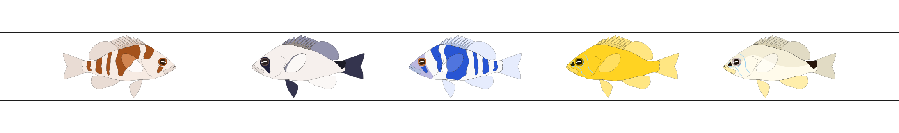

About the package:
The hypoimg package provides illustrations to annotate plots within studies of the Caribbean hamlets (Hypoplectrus spp).
It contains the basic illustrations of different hamlet species and countries where hamlets occur. Additionally, the package provides a set of functions to construct legends which link a color map with a set of hamlet species, pairwise species comparisons (or countries).
Additionally to this package, resources for the analysis of genomic data of hamlets are provided within the hypogen package.
Installation
Using the remotes package, hypoimg can be installed directly from github:
install.packages("remotes")
remotes::install_github("k-hench/hypoimg")Hamlet annotations
The core of the hypoimg package is the selection of hamlet illustrations:

The package contains one left and one right facing illustration for 19 different hamlet species and morphotypes. They are made available as grid objects (grob) in the tibble hypo_img:
hypo_img
#> # A tibble: 22 x 4
#> spec geno l r
#> <chr> <chr> <list> <list>
#> 1 aberrans H <gTree> <gTree>
#> 2 atlahua H <gTree> <gTree>
#> 3 castroaguirrei H <gTree> <gTree>
#> 4 chlorurus H <gTree> <gTree>
#> 5 ecosur H <gTree> <gTree>
#> 6 floridae H <gTree> <gTree>
#> 7 gemma H <gTree> <gTree>
#> 8 gummigutta H <gTree> <gTree>
#> 9 guttavarius H <gTree> <gTree>
#> 10 indigo H <gTree> <gTree>
#> # … with 12 more rowsA pure version of the hamlet annotations can be added to any ggplot using the the functions hypo_anno_l() and hypo_anno_r(). These functions are simple wrappers around the ggplot2 function annotation_custom(().
ggplot(tibble(x = c(3, 3.25, 3.75),y = c(-.1, -.3, .3)),
aes(x = x, y = y))+
geom_line(size = 4, color = "#35B779")+
hypo_anno_r('puella', xmin = 0, xmax = 1)+
hypo_anno_l('indigo', xmin = 1.5, xmax = 2.5)+
coord_fixed()+
scale_x_continuous(limits = c(0, 3.75))+
scale_y_continuous(limits = c(-.35, .35))
A common task is a contrast different hamlet species in genomic or ecologic terms. Here it might be useful to assign individual colors to the individual hamlet species. The hypoimg package provides a way to create a custom legend for such a situation.
An individual color - species assignment can be shown using the hypo_anno_single() function:
hypo_anno_single(species = 'aberrans',
circle_fill = "#35B779", circle_color = 'black',
plot_names = TRUE, plot_name_size = 5)The same is possible for pairs of species using hypo_anno_pair():
hypo_anno_pair(left = 'ecosur', right = 'maya',
circle_fill = "#F16913", circle_color = 'black',
plot_names = TRUE, plot_name_size = 5)If several different species are used within one plot a custom legend can be generated based on the species list and the color map using hypo_legend_single().
To be able to use this legend the it needs to be transformed into a grob using ggplot2::ggplotGrob().
set.seed(5)
# For this demonstration we'll create a fake length - weight reltionship data table.
# To do this, we'll implement the relationship as stated by fishbase for H. puella:
# http://www.fishbase.se/summary/Hypoplectrus-puella.html
hamlet_length_weight <- function(x, a = 0.009, b = 3.04 , rand = 0){
a * x^b + rnorm(length(x)) * rand
}
# The species involved in the fake data set
hamlet_species <- c('nigricans', 'unicolor', 'gemma')
# The fake dataset
hamlet_data <- tibble(species = rep(hamlet_species, each = 10),
len = sample(5:17, replace = TRUE , size = 30)+rnorm(30)) %>%
mutate(weig = ifelse(species == 'nigricans',
hamlet_length_weight(x = len, rand = 1) + rnorm(10),
ifelse(species == 'unicolor',
hamlet_length_weight(x = len, b = 3.14,rand = 1.5),
hamlet_length_weight(x = len, b = 2.94,rand = 1.5))))
# Our color map
clr_single <- viridis::viridis(3)
# The custom legend is created based on the species list and the color map
legend_grob_single <- hypo_legend_single(species = hamlet_species, color_map = clr_single,
circle_color = 'black', plot_names = TRUE) %>%
ggplotGrob()
# We add the custom legend using ggplot2::annotation_custom()
ggplot(hamlet_data, aes(x = len, y = weig,
color = species, fill = species)) +
geom_line(size = 1.2)+
geom_point(color = "black", size = 2.5, shape = 21)+
annotation_custom(legend_grob_single,xmin = 3,xmax = 9.5, ymin = 42)+
labs(x = "Length (cm)",
y = "Weight (g)")+
scale_color_manual(values = clr_single, guide = FALSE)+
scale_fill_manual(values = clr_single, guide = FALSE)Similarly, the pair wise elements can be combined into a legend using hypo_legend_pair()
# The species involved in the fake data set
left <- c("aberrans", "aberrans", "chlorurus")
right <- c("aberrans", "chlorurus", "chlorurus")
# For this demonstration we'll create a fake pairing experiment with egg counts.
# this function samples counts for 15 pairings
egg_c <- function(x){sample(x,size = 15,replace = TRUE)}
# The fake dataset
pairing_data <- tibble(pair = rep(str_c(left, right, sep = "-"),
each = 15),
pairing_egg_counts = c(egg_c(90:110),egg_c(50:95), egg_c(60:100)),
time_point = factor(rep(rep(c('morning','noon','evening'),
each=5),
3),
levels = c('morning','noon','evening')))
# Our color map
clr_pair <- RColorBrewer::brewer.pal(3,"RdBu")
# The custom legend is created based on two species lists and the color map
legend_grob_pair <- hypo_legend_pair(left = left, right = right,
color_map = clr_pair,
circle_color = 'black',
plot_names = TRUE,
circle_lwd = .5) %>%
ggplotGrob()
# We add the custom legend using ggplot2::annotation_custom()
ggplot(pairing_data, aes(y = pairing_egg_counts,
x = time_point,
fill = pair))+
geom_boxplot()+
annotation_custom(legend_grob_pair,
xmin = 3.25, ymin = 70)+
coord_cartesian(xlim = c(0.75,4.6))+
labs(x = "Time point",
y = "Egg count / pairing (n)")+
scale_fill_manual(values = clr_pair,guide = FALSE)Flag annotations
Besides the hamlet illustrations, the hypoimg also provides labels for all countries of the Caribbean and the Golf of Mexico:
hypo_flag
#> # A tibble: 41 x 2
#> geo flag
#> <chr> <list>
#> 1 anguilla <gTree>
#> 2 antigua_barbuda <gTree>
#> 3 aruba <gTree>
#> 4 bahamas <gTree>
#> 5 barbados <gTree>
#> 6 belize <gTree>
#> 7 bermuda <gTree>
#> 8 british_virgin_islands <gTree>
#> 9 caribbean <gTree>
#> 10 cayman_islands <gTree>
#> # … with 31 more rowsAn overview of all the flags can be generated with hypo_flag_palette().
Apart from this there exist one flag version for all of the previously discussed functions:
hypo_anno_flag()hypo_anno_flag_single()hypo_anno_flag_pair()hypo_legend_flag_single()hypo_legend_flag_pair()